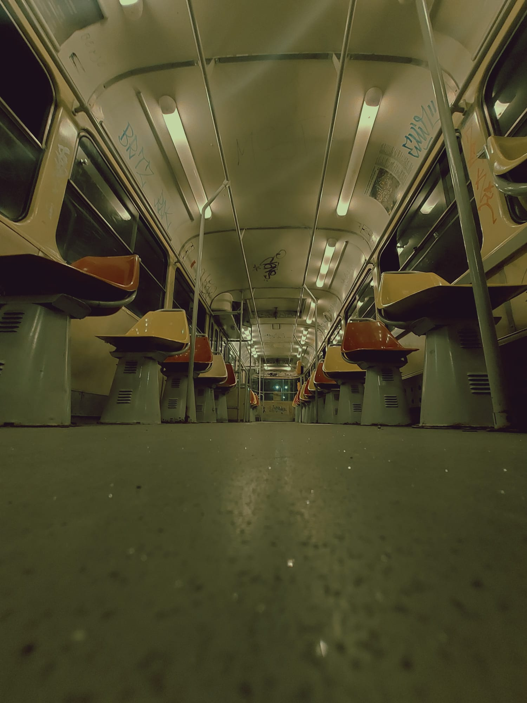
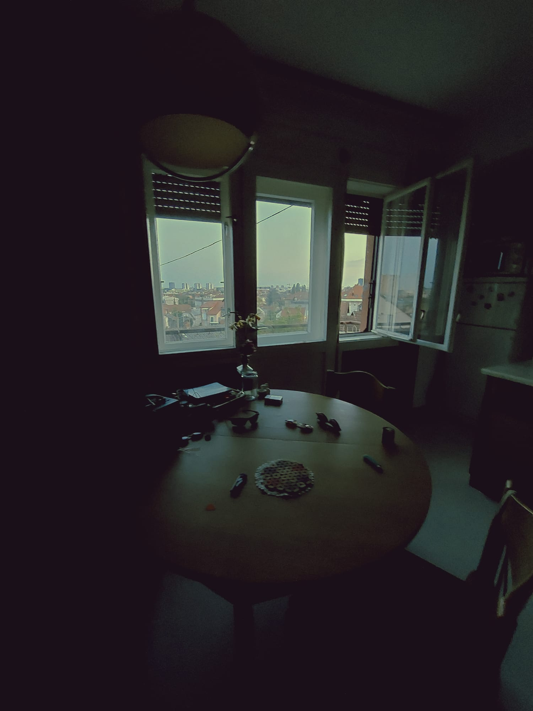

Ljubav prema umjetnosti, fotografiji, glazbi ili bilo čemu što je u sebi imalo neku estetičnu vrijednost, rodila se još od malih nogu. Sve oko sebe sam zapažao na nekakv svoj unikatan način i uvijek sam ljepotu tražio u detaljima.
 
Oscar
Također u mom životu veliku ulogu igra i moj pas Oscar. Oscar je sibirski haski koji je prije 2 godine stigao u našu obitelj. Osim što je iznimno inteligentan, tvrdoglav i sebičan voli se i slikati.


Osim što studiram povremeno i radim, odosno pravim, kreiram facebook objave za kozemtički salon HelenaBeautyandSpa
.
Sve objave kreiram u programima kao što su Photoshop ili Illustrator primjenjujući tehnike koje sam naučio na faksu.
Kao što sam već spomenuo jako volim raditi u Photoshopu. Svaki put kada uhvatim malo slobodnog vremena okušam se u nekim novim zadatcima koje si sam zadam ili pokušavam ostvariti neku ideju koja mi se neko vrijeme mota po glavi.

Većinu svog znanja stekao sam kroz srednjoškolsko obrazovanje i na faksu. Ali moram naglasiti kako to nije jedini način da se nešto nauči. U današnjem svijetu, svijetu interneta vrlo je lako dođi do različitih informacija. Pa tako sam i ja dosta svog vremena istraživao po youtube-u kako bih našao savršene tutorijale za početnike.